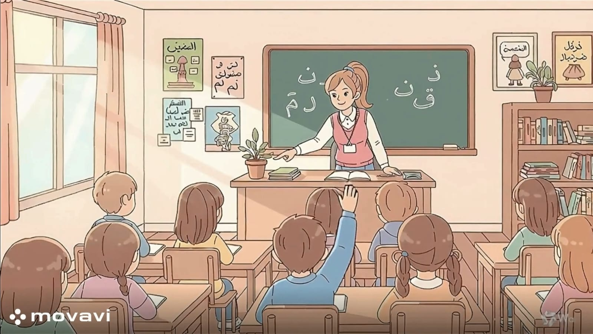

الطلــب
بعد الانتهاء من تدريس هذا الدرس يفترض أن يكون التلميذ قادرًا على:
أن يُحدد الكلمات السحرية للطلب (من فضلك، لو سمحت، شكراً لك).
أن يُقدر أثر الأسلوب اللطيف في كسب محبة وتعاون الآخرين.
أن يستشعر أثر الأسلوب اللطيف في كسب محبة الآخرين وتعاونهم.
أن يُصيغ طلباته بأسلوب مهذب في مواقف مختلفة (مع المعلم، الوالدين، الأصدقاء).
أن يُحول "الطلب الفظ" إلى "طلب مهذب" باستخدام لغة جسد ونبرة صوت هادئة.

نشاط (1): "المفتاح السحري":
الموقف:
: تريد من زميلك أن يعيرك ممحاته لأنك نسيت ممحاتك.
• السؤال:
أي جملة هي "المفتاح السحري" الذي سيجعل زميلك يوافق بسرور؟
أ- أعطني ممحاتك الآن.
ب- لو سمحت، هل يمكنني استعارة ممحاتك قليلاً؟
نشاط (2): "في المطعم الصغير":
الموقف :
تخيل أنك في مقصف المدرسة وتريد شراء شطيرة وعصير.
• السؤال: ما هي أنسب جملة لطلب المساعدة؟
أ- احمل حقيبتي يا أبي.
ب- يا أبي، هل يمكنك مساعدتي في حمل الحقيبة لو سمحت؟
نشاط (3): "ماذا تفعل لو رُفض طلبك؟":
الموقف :
طلبت من صديقك أن يلعب معك بكرته، لكنه قال: "آسف، سألعب بها وحدي الآن".
• السؤال: كيف ترد عليه بأدب؟
نشاط (4):"طلب المساعدة من الكبار":
الموقف :
وجدت حقيبتك ثقيلة جدًا وتريد من والدك مساعدتك في حملها.
• السؤال: ما هي أنسب جملة لطلب المساعدة؟
أ- احمل حقيبتي يا أبي.
ب- يا أبي، هل يمكنك مساعدتي في حمل الحقيبة لو سمحت؟